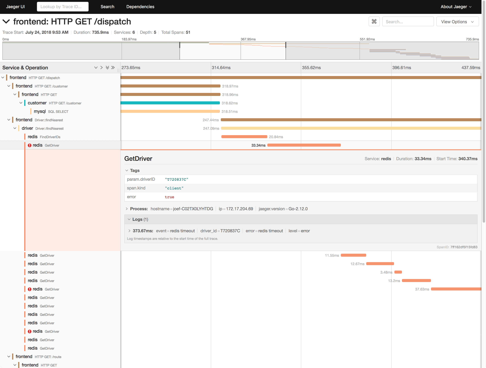
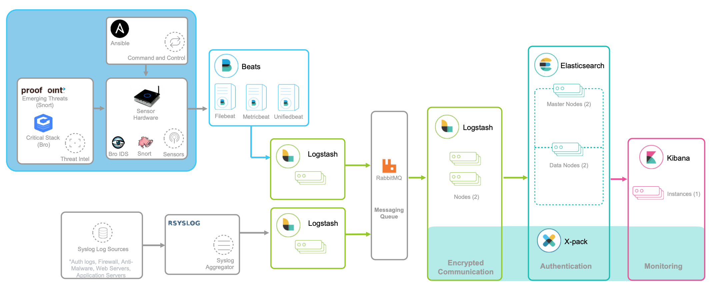
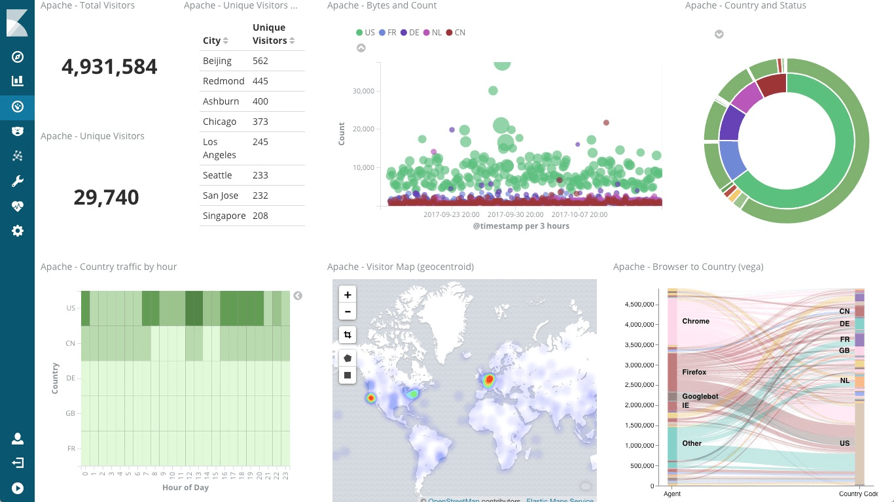

- 00 开篇词 别再让Linux性能问题成为你的绊脚石.md.html
- 01 如何学习Linux性能优化？.md.html
- 02 基础篇：到底应该怎么理解“平均负载”？.md.html
- 03 基础篇：经常说的 CPU 上下文切换是什么意思？（上）.md.html
- 04 基础篇：经常说的 CPU 上下文切换是什么意思？（下）.md.html
- 05 基础篇：某个应用的CPU使用率居然达到100%，我该怎么办？.md.html
- 06 案例篇：系统的 CPU 使用率很高，但为啥却找不到高 CPU 的应用？.md.html
- 07 案例篇：系统中出现大量不可中断进程和僵尸进程怎么办？（上）.md.html
- 08 案例篇：系统中出现大量不可中断进程和僵尸进程怎么办？（下）.md.html
- 09 基础篇：怎么理解Linux软中断？.md.html
- 10 案例篇：系统的软中断CPU使用率升高，我该怎么办？.md.html
- 11 套路篇：如何迅速分析出系统CPU的瓶颈在哪里？.md.html
- 12 套路篇：CPU 性能优化的几个思路.md.html
- 13 答疑（一）：无法模拟出 RES 中断的问题，怎么办？.md.html
- 14 答疑（二）：如何用perf工具分析Java程序？.md.html
- 15 基础篇：Linux内存是怎么工作的？.md.html
- 16 基础篇：怎么理解内存中的Buffer和Cache？.md.html
- 17 案例篇：如何利用系统缓存优化程序的运行效率？.md.html
- 18 案例篇：内存泄漏了，我该如何定位和处理？.md.html
- 19 案例篇：为什么系统的Swap变高了（上）.md.html
- 20 案例篇：为什么系统的Swap变高了？（下）.md.html
- 21 套路篇：如何“快准狠”找到系统内存的问题？.md.html
- 22 答疑（三）：文件系统与磁盘的区别是什么？.md.html
- 23 基础篇：Linux 文件系统是怎么工作的？.md.html
- 24 基础篇：Linux 磁盘I_O是怎么工作的（上）.md.html
- 25 基础篇：Linux 磁盘I_O是怎么工作的（下）.md.html
- 26 案例篇：如何找出狂打日志的“内鬼”？.md.html
- 27 案例篇：为什么我的磁盘I_O延迟很高？.md.html
- 28 案例篇：一个SQL查询要15秒，这是怎么回事？.md.html
- 29 案例篇：Redis响应严重延迟，如何解决？.md.html
- 30 套路篇：如何迅速分析出系统I_O的瓶颈在哪里？.md.html
- 31 套路篇：磁盘 I_O 性能优化的几个思路.md.html
- 32 答疑（四）：阻塞、非阻塞 I_O 与同步、异步 I_O 的区别和联系.md.html
- 33 关于 Linux 网络，你必须知道这些（上）.md.html
- 34 关于 Linux 网络，你必须知道这些（下）.md.html
- 35 基础篇：C10K 和 C1000K 回顾.md.html
- 36 套路篇：怎么评估系统的网络性能？.md.html
- 37 案例篇：DNS 解析时快时慢，我该怎么办？.md.html
- 38 案例篇：怎么使用 tcpdump 和 Wireshark 分析网络流量？.md.html
- 39 案例篇：怎么缓解 DDoS 攻击带来的性能下降问题？.md.html
- 40 案例篇：网络请求延迟变大了，我该怎么办？.md.html
- 41 案例篇：如何优化 NAT 性能？（上）.md.html
- 42 案例篇：如何优化 NAT 性能？（下）.md.html
- 43 套路篇：网络性能优化的几个思路（上）.md.html
- 44 套路篇：网络性能优化的几个思路（下）.md.html
- 45 答疑（五）：网络收发过程中，缓冲区位置在哪里？.md.html
- 46 案例篇：为什么应用容器化后，启动慢了很多？.md.html
- 47 案例篇：服务器总是时不时丢包，我该怎么办？（上）.md.html
- 48 案例篇：服务器总是时不时丢包，我该怎么办？（下）.md.html
- 49 案例篇：内核线程 CPU 利用率太高，我该怎么办？.md.html
- 50 案例篇：动态追踪怎么用？（上）.md.html
- 51 案例篇：动态追踪怎么用？（下）.md.html
- 52 案例篇：服务吞吐量下降很厉害，怎么分析？.md.html
- 53 套路篇：系统监控的综合思路.md.html
- 54 套路篇：应用监控的一般思路.md.html
- 55 套路篇：分析性能问题的一般步骤.md.html
- 56 套路篇：优化性能问题的一般方法.md.html
- 57 套路篇：Linux 性能工具速查.md.html
- 58 答疑（六）：容器冷启动如何性能分析？.md.html
- 加餐（一） 书单推荐：性能优化和Linux 系统原理.md.html
- 加餐（二） 书单推荐：网络原理和 Linux 内核实现.md.html
- 用户故事 “半路出家 ”，也要顺利拿下性能优化！.md.html
- 用户故事 运维和开发工程师们怎么说？.md.html
- 结束语 愿你攻克性能难关.md.html
- 捐赠
54 套路篇：应用监控的一般思路
你好，我是倪朋飞。
上一节，我带你学习了，如何使用 USE 法来监控系统的性能，先简单回顾一下。
系统监控的核心是资源的使用情况，这既包括CPU、内存、磁盘、文件系统、网络等硬件资源，也包括文件描述符数、连接数、连接跟踪数等软件资源。而要描述这些资源瓶颈，最简单有效的方法就是 USE 法。
USE 法把系统资源的性能指标，简化为了三个类别：使用率、饱和度以及错误数。 当这三者之中任一类别的指标过高时，都代表相对应的系统资源可能存在性能瓶颈。
基于 USE 法建立性能指标后，我们还需要通过一套完整的监控系统，把这些指标从采集、存储、查询、处理，再到告警和可视化展示等贯穿起来。这样，不仅可以将系统资源的瓶颈快速暴露出来，还可以借助监控的历史数据，来追踪定位性能问题的根源。
除了上一节讲到的系统资源需要监控之外，应用程序的性能监控，当然也是必不可少的。今天，我就带你一起来看看，如何监控应用程序的性能。
指标监控
跟系统监控一样，在构建应用程序的监控系统之前，首先也需要确定，到底需要监控哪些指标。特别是要清楚，有哪些指标可以用来快速确认应用程序的性能问题。
对系统资源的监控，USE 法简单有效，却不代表其适合应用程序的监控。举个例子，即使在 CPU 使用率很低的时候，也不能说明应用程序就没有性能瓶颈。因为应用程序可能会因为锁或者 RPC 调用等，导致响应缓慢。
所以，应用程序的核心指标，不再是资源的使用情况，而是请求数、错误率和响应时间。这些指标不仅直接关系到用户的使用体验，还反映应用整体的可用性和可靠性。
有了请求数、错误率和响应时间这三个黄金指标之后，我们就可以快速知道，应用是否发生了性能问题。但是，只有这些指标显然还是不够的，因为发生性能问题后，我们还希望能够快速定位“性能瓶颈区”。所以，在我看来，下面几种指标，也是监控应用程序时必不可少的。
第一个，是应用进程的资源使用情况，比如进程占用的 CPU、内存、磁盘 I/O、网络等。使用过多的系统资源，导致应用程序响应缓慢或者错误数升高，是一个最常见的性能问题。
第二个，是应用程序之间调用情况，比如调用频率、错误数、延时等。由于应用程序并不是孤立的，如果其依赖的其他应用出现了性能问题，应用自身性能也会受到影响。
第三个，是应用程序内部核心逻辑的运行情况，比如关键环节的耗时以及执行过程中的错误等。由于这是应用程序内部的状态，从外部通常无法直接获取到详细的性能数据。所以，应用程序在设计和开发时，就应该把这些指标提供出来，以便监控系统可以了解其内部运行状态。
有了应用进程的资源使用指标，你就可以把系统资源的瓶颈跟应用程序关联起来，从而迅速定位因系统资源不足而导致的性能问题；
有了应用程序之间的调用指标，你可以迅速分析出一个请求处理的调用链中，到底哪个组件才是导致性能问题的罪魁祸首；
而有了应用程序内部核心逻辑的运行性能，你就可以更进一步，直接进入应用程序的内部，定位到底是哪个处理环节的函数导致了性能问题。
基于这些思路，我相信你就可以构建出，描述应用程序运行状态的性能指标。再将这些指标纳入我们上一期提到的监控系统（比如 Prometheus + Grafana）中，就可以跟系统监控一样，一方面通过告警系统，把问题及时汇报给相关团队处理；另一方面，通过直观的图形界面，动态展示应用程序的整体性能。
除此之外，由于业务系统通常会涉及到一连串的多个服务，形成一个复杂的分布式调用链。为了迅速定位这类跨应用的性能瓶颈，你还可以使用 Zipkin、Jaeger、Pinpoint 等各类开源工具，来构建全链路跟踪系统。
比如，下图就是一个 Jaeger 调用链跟踪的示例。
- （图片来自 Jaeger 文档）
全链路跟踪可以帮你迅速定位出，在一个请求处理过程中，哪个环节才是问题根源。比如，从上图中，你就可以很容易看到，这是 Redis 超时导致的问题。
全链路跟踪除了可以帮你快速定位跨应用的性能问题外，还可以帮你生成线上系统的调用拓扑图。这些直观的拓扑图，在分析复杂系统（比如微服务）时尤其有效。
日志监控
性能指标的监控，可以让你迅速定位发生瓶颈的位置，不过只有指标的话往往还不够。比如，同样的一个接口，当请求传入的参数不同时，就可能会导致完全不同的性能问题。所以，除了指标外，我们还需要对这些指标的上下文信息进行监控，而日志正是这些上下文的最佳来源。
对比来看，
指标是特定时间段的数值型测量数据，通常以时间序列的方式处理，适合于实时监控。
而日志则完全不同，日志都是某个时间点的字符串消息，通常需要对搜索引擎进行索引后，才能进行查询和汇总分析。
对日志监控来说，最经典的方法，就是使用 ELK 技术栈，即使用 Elasticsearch、Logstash 和 Kibana 这三个组件的组合。
如下图所示，就是一个经典的 ELK 架构图：
- （图片来自elastic.co）
这其中，
Logstash 负责对从各个日志源采集日志，然后进行预处理，最后再把初步处理过的日志，发送给 Elasticsearch 进行索引。
Elasticsearch 负责对日志进行索引，并提供了一个完整的全文搜索引擎，这样就可以方便你从日志中检索需要的数据。
Kibana 则负责对日志进行可视化分析，包括日志搜索、处理以及绚丽的仪表板展示等。
下面这张图，就是一个 Kibana 仪表板的示例，它直观展示了 Apache 的访问概况。
- （图片来自elastic.co）
值得注意的是，ELK 技术栈中的 Logstash 资源消耗比较大。所以，在资源紧张的环境中，我们往往使用资源消耗更低的 Fluentd，来替代 Logstash（也就是所谓的 EFK 技术栈）。
小结
今天，我为你梳理了应用程序监控的基本思路。应用程序的监控，可以分为指标监控和日志监控两大部分：
指标监控主要是对一定时间段内性能指标进行测量，然后再通过时间序列的方式，进行处理、存储和告警。
日志监控则可以提供更详细的上下文信息，通常通过 ELK 技术栈来进行收集、索引和图形化展示。
在跨多个不同应用的复杂业务场景中，你还可以构建全链路跟踪系统。这样可以动态跟踪调用链中各个组件的性能，生成整个流程的调用拓扑图，从而加快定位复杂应用的性能问题。
思考
最后，我想邀请你一起来聊聊，你是怎么监控应用程序的性能的。你通常会监控哪些应用程序的性能指标，又是如何搭建链路跟踪和日志监控系统，来定位应用瓶颈的？你可以结合我的讲述，总结自己的思路。
欢迎在留言区和我讨论，也欢迎把这篇文章分享给你的同事、朋友。我们一起在实战中演练，在交流中进步。
© 2019 - 2023 Liangliang Lee. Powered by gin and hexo-theme-book.